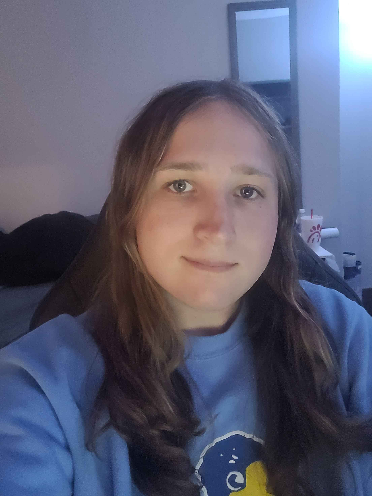

A picture of me!
Contact information:
Email: n360s369@ku.edu
I am a Computer Science major at the University of Kansas! I am in my 3rd year and currently taking classes such as Software Engineering and Discrete Structures. I have previously interned for Cerner in high school.
Heres an overview of my campus!